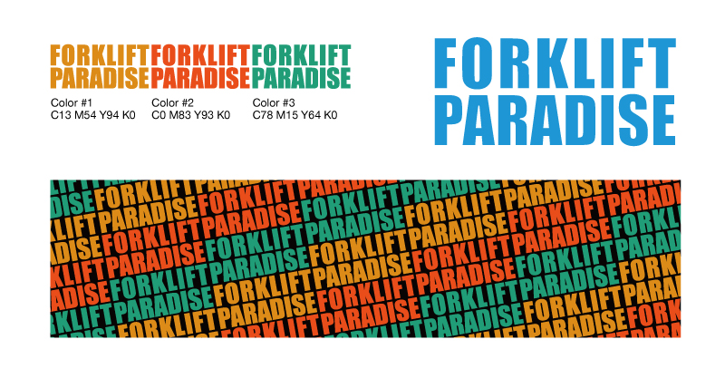

2017年 / 制作時間 3h / Adobe Illustrator CC
某企業のノベルティステッカー用として制作しました。
「業界関係者ならニヤリとする配色」にしつつ、「ジョークの一環なので出来るだけ派手でうるさいものにして欲しい」という要望に基づいてデザインを行いました。
ステッカーデザイン

2017年 / 制作時間 3h / Adobe Illustrator CC
某企業のノベルティステッカー用として制作しました。
「業界関係者ならニヤリとする配色」にしつつ、「ジョークの一環なので出来るだけ派手でうるさいものにして欲しい」という要望に基づいてデザインを行いました。